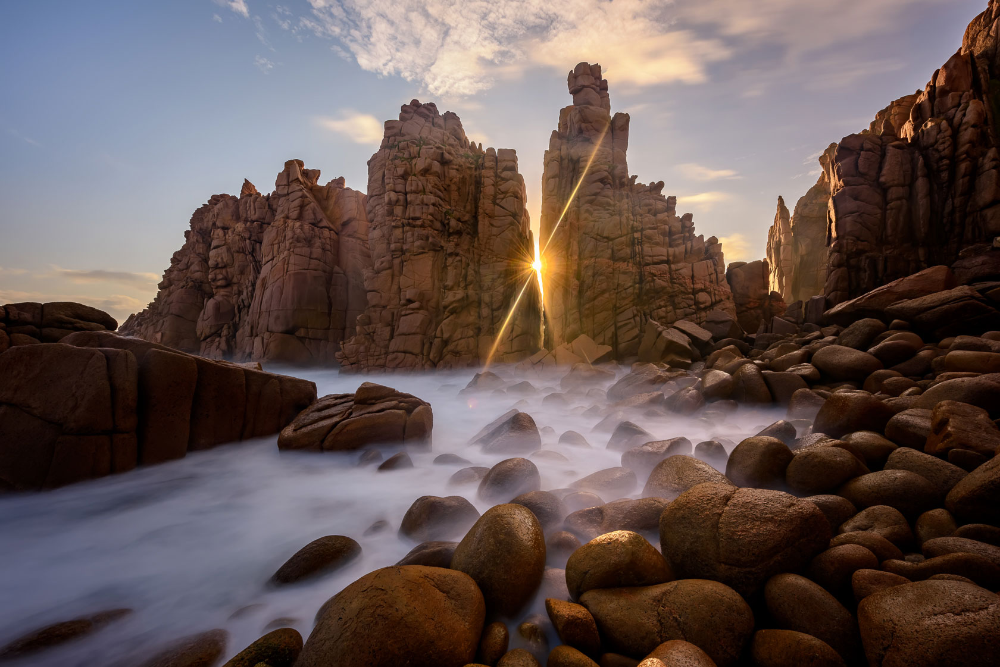
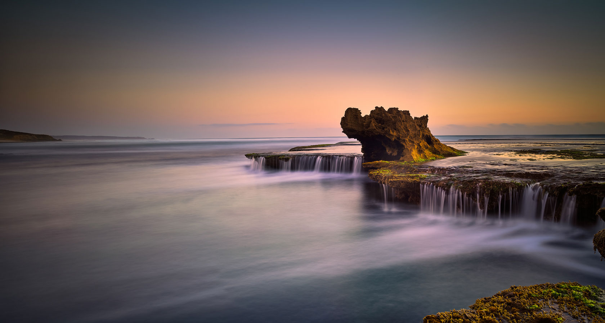

引言：海浪雾化的艺术
海景摄影中最迷人的技法之一就是使用长时间曝光将波涛汹涌的海浪转化为如梦似幻的雾状效果。这种被摄影师们称为"海浪雾化"的效果，能够创造出宁静、抽象且充满艺术感的画面，使观者感受到一种超脱现实的宁静与平和。
当我们使用30秒左右的曝光时间拍摄海浪时，水面的运动被平均化，形成了丝绒般平滑的表面，同时保留了岩石、灯塔等静态元素的清晰细节。这种动静结合的视觉对比，常常能创造出极具冲击力的艺术效果。
所需器材
要拍摄高质量的海浪雾化长曝光照片，以下器材是必不可少的：
- 相机：任何可手动控制的相机，最好具备B门功能（允许超过30秒的曝光）
- 三脚架：坚固稳定的三脚架是必须的，最好带有挂钩可以增加额外重量提高稳定性
- ND滤镜：强密度中性灰滤镜，推荐ND1000（10档）或更高档数滤镜，用于日间拍摄；黄昏时可使用较低档数如ND64（6档）
- 渐变滤镜（可选）：软渐变ND滤镜有助于平衡天空与海面的曝光
- 快门线或遥控器：避免触碰相机造成震动，对长曝光尤为重要
- 镜头清洁工具：在海边容易有盐雾和水滴沾到镜头和滤镜上
- 防水装备：保护相机和其他设备免受海水和潮湿的侵害
器材选择提示
如果预算有限，优先选择高质量的ND滤镜而非高端三脚架。廉价ND滤镜常常会引入色偏和降低画质，而中等价位的三脚架通常已足够稳定，尤其是在没有强风的情况下。
拍摄前的计划与准备
海景摄影，尤其是长曝光拍摄，需要周密的计划和准备：
地点选择
不是所有海岸线都适合拍摄雾化效果。最佳拍摄地点应具备以下特征：
- 有岩石、堤防或其他固定元素作为前景或中景，与平滑的海面形成对比
- 中等强度的浪涛活动（太平静无波浪则效果不明显，太汹涌则可能过于混乱）
- 具有视觉吸引力的构图元素，如灯塔、突出的岩石、码头等
- 远离人多的海滩区域，以避免画面中出现移动的人影
时机选择
拍摄时机对创造完美海浪雾化效果至关重要：
- 潮汐时间：了解拍摄地的潮汐表。涨潮和退潮之间的转换期常常能提供最动感的水流
- 一天中的时间：黄金时间（日出前后和日落前后）提供最佳的光线质量和方向
- 天气状况：部分多云的天气往往比晴朗或阴天提供更戏剧性的光线
- 季节因素：冬季往往有更强劲的海浪和更戏剧性的天空
潮汐应用推荐
使用如Tide Charts、Tide Table或Marine Compass等潮汐应用可以帮助规划最佳拍摄时间。这些应用提供精确的潮汐预测，帮助您安排拍摄行程。
最佳相机设置
要实现30秒的海浪雾化长曝光，需要以下相机设置：
| 参数 |
推荐设置 |
说明 |
| 拍摄模式 |
手动模式(M) |
完全控制所有曝光参数，对长曝光至关重要 |
| 光圈 |
f/8 - f/13 |
提供良好的景深和锐度，确保整个场景从前景到远景都清晰 |
| ISO |
100（或最低原生ISO） |
减少噪点，提高图像质量，尤其是在长曝光情况下 |
| 白平衡 |
日光或阴天 |
日光设置通常提供更真实的色彩；如拍摄RAW格式，可后期调整 |
| 曝光时间 |
20-30秒 |
使用ND1000滤镜在日间实现；黄昏可能需要较低档数滤镜 |
| 对焦模式 |
手动对焦 |
在安装ND滤镜前完成对焦，然后切换到手动模式锁定 |
| 图像格式 |
RAW |
提供最大的后期处理灵活性，尤其是调整白平衡和恢复高光/阴影细节 |
使用OWL ND CALC应用可以轻松计算添加ND滤镜后所需的曝光时间：
- 测量不使用滤镜时的正确曝光（例如1/125秒，f/11，ISO 100）
- 在应用中输入这些参数
- 选择您的ND滤镜强度（如ND1000，10档）
- 应用会计算出新的曝光时间（在此例中约为8秒）
- 如果目标是30秒曝光，应用会推荐调整参数（如改用f/16或更高档数的滤镜）
实地拍摄技巧
设置步骤
- 稳定三脚架：将三脚架腿部置于稳固表面，如果在沙滩上，可以将腿部压入沙中增加稳定性
- 构图与对焦：在没有安装ND滤镜前完成构图和对焦
- 测试曝光：不使用ND滤镜进行测试照片，确认构图和曝光准确
- 切换到手动对焦：确保对焦锁定
- 计算曝光时间：使用OWL ND CALC或手动计算添加ND滤镜后所需的曝光时间
- 安装ND滤镜：小心安装滤镜，避免触碰镜头或改变对焦
- 连接快门线：使用快门线或遥控器避免触碰相机
- 拍摄：开始长时间曝光，注意监控波浪模式
构图考虑
海浪雾化照片中构图尤为重要，因为平滑的水面可能缺乏细节：
- 遵循三分法则：通常将海平面放置在画面1/3或2/3处
- 寻找强烈的前景：如岩石、防波堤或沙滩图案
- 引导线：利用退潮的水流线条引导视线
- 简化构图：长曝光本身就会创造简洁感，避免画面过于复杂
- 考虑留白：雾化的海面提供了"无声"区域，可与具体元素形成平衡
常见挑战与解决方案
过度曝光的天空
问题：海面需要较长曝光，但可能导致天空过度曝光
解决方案：使用渐变ND滤镜平衡天空与海面曝光，或在后期通过多张曝光合成解决
滤镜上的水滴
问题：海边环境容易使滤镜沾上水滴，影响图像质量
解决方案：使用防水喷雾处理滤镜表面，随身携带多块干燥的超细纤维布，在曝光前检查并清洁滤镜
三脚架不稳定
问题：在沙滩或波浪冲刷区域，三脚架容易下沉或移动
解决方案：使用更宽大的三脚架底座垫片，或将三脚架腿部埋入沙中，在中央柱挂重物增加稳定性
曝光计算错误
问题：光线迅速变化导致计算的长曝光时间不准确
解决方案：使用OWL ND CALC应用执行实时曝光计算，多拍几张不同曝光的照片以确保理想效果
滤镜色偏处理
一些ND滤镜，特别是较低价格的产品，可能引入蓝色或红褐色色偏。拍摄前在白平衡设置中做相应补偿，或确保拍摄RAW格式以便后期校正。
后期处理技巧
即使是完美捕捉的海浪雾化照片，也能从精心的后期处理中受益：
基本调整
- 校正白平衡：调整白平衡消除ND滤镜可能引入的色偏
- 优化对比度：适当增强全局对比度，突出海面的平滑质感
- 调整曝光：微调局部曝光，确保细节丰富的海面既不过暗也不过亮
- 处理噪点：长曝光可能增加噪点，适当使用降噪功能
进阶技巧
- 局部调整：使用渐变滤镜工具分别调整天空和海面
- 增强质感：适当使用清晰度工具强调岩石和其他固定元素的细节
- 颜色分级：考虑使用拆分色调创造冷暖对比，增强照片的情绪表达
- 移除干扰元素：使用仿制图章或修复工具移除可能分散注意力的小元素
作品案例解析
让我们分析两张不同风格的海浪雾化长曝光作品，了解它们的技术参数和视觉特点：
案例1：极简主义海景

技术参数：
- 相机：Sony A7R IV
- 镜头：FE 16-35mm f/2.8 GM at 24mm
- 光圈：f/11
- 曝光时间：30秒
- ISO：100
- 滤镜：ND1000（10档）+ 0.9软渐变ND
风格分析：这张照片采用极简主义风格，孤立的防波堤作为画面主体，几乎虚化的海面和柔和的天空创造出宁静的氛围。30秒的曝光完全平滑了海浪，形成如镜面般的效果，而轻微的云层移动增添了画面的动感。冷色调的处理强化了场景的宁静和孤寂感。
案例2：动态海岸线

技术参数：
- 相机：Canon EOS R5
- 镜头：RF 15-35mm f/2.8L IS USM at 20mm
- 光圈：f/10
- 曝光时间：25秒
- ISO：100
- 滤镜：ND64（6档）
风格分析：与第一张照片不同，这张作品捕捉了退潮过程中创造的动态流线。岩石海岸作为强烈的前景元素，而相对较短的25秒曝光保留了一些水流的纹理，没有完全雾化。暖色调的后期处理突出了黄昏时分的温暖光线，形成了与凉爽海水的视觉对比。
总结
海浪雾化长曝光技术是风景摄影中最具表现力的技法之一，它将动态的海洋转化为梦幻般的视觉享受。通过使用ND滤镜实现30秒左右的曝光，我们可以创造出超越现实的艺术表达。
关键要点回顾：
- 10档(ND1000)滤镜在日间是实现理想雾化效果的关键
- 稳定的三脚架和快门线是清晰长曝光的必要条件
- 潮汐时间和日出/日落时分是拍摄的最佳时机
- 简洁而有力的构图能够提升海浪雾化照片的视觉冲击力
- OWL ND CALC应用可以帮助精确计算所需曝光时间
- 耐心和反复尝试是掌握这项技术的关键
记住，每个海岸线和天气条件都会创造不同的效果，所以不要害怕实验和创新。享受拍摄过程本身，通过长曝光探索大海的另一种美学表达。